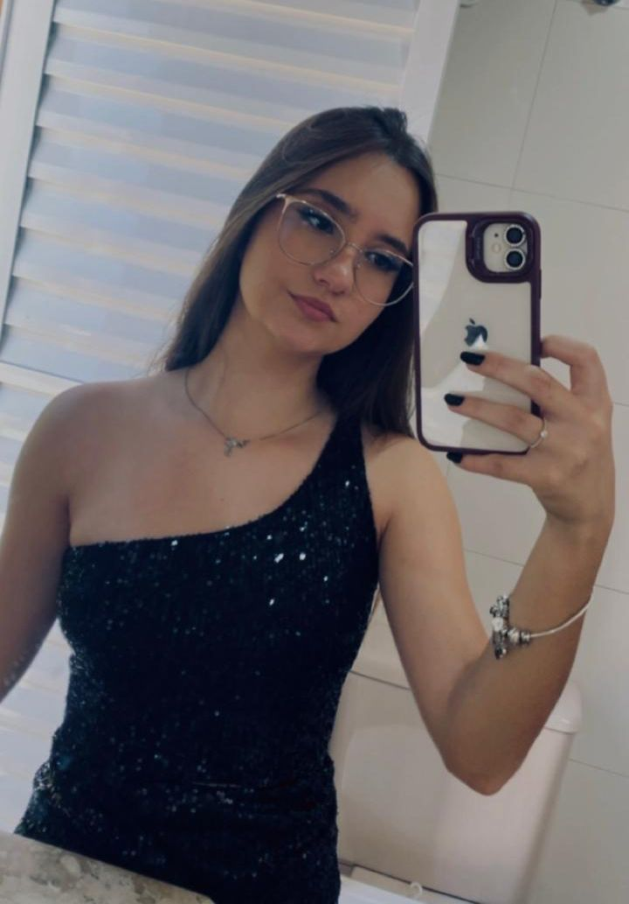

Quem Somos
Somos estudantes do CEMEP e desenvolvemos este projeto como parte do TCC com o objetivo de conscientizar sobre saúde mental.
Desenvolvido por:

Ana Clara Amaral de Oliveira

Heloisa Maria Carvalho
Somos estudantes do CEMEP e desenvolvemos este projeto como parte do TCC com o objetivo de conscientizar sobre saúde mental.
Desenvolvido por:
Ana Clara Amaral de Oliveira

Heloisa Maria Carvalho